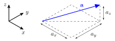
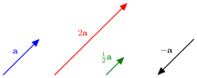
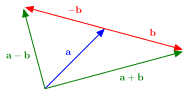
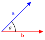

Vectors
Contents
Vectors#
A vector is an object that has length and direction. In mathematical notation vectors are denoted in print using a boldface character or as an arrow over a character and underlined when handwritten
A vector in \(\mathbb{R}^n\) is defined by the signed distance along each axis by an \(n\)-tuple. For example, let \(\mathbf{a}\) be a vector in \(\mathbb{R}^3\) defined by the 3-tuple \(\mathbf{a} = (a_x, a_y, a_z)\) where \(a_x,a_y,a_z \in \mathbb{R}\), then \(\mathbf{a}\) can be represented geometrically as shown in Fig. 5.
{kind=link}

Fig. 5 A vector in \(\mathbb{R}^3\).#
The tuple representing a vector can be written as either a matrix consisting of a single row or a single column. So a vector in \(\mathbb{R}^3\) can be represented as
These representations are called row vector and column vector respectively.
Vector magnitude#
The length of a vector \(\mathbf{a}\) is known as the magnitude and is denoted using \(|\mathbf{a}|\).
Definition 1 (Vector magnitude)
The magnitude of a vector in \(\mathbb{R}^n\), \(\mathbf{a} = (a_1, a_2, \ldots, a_n)\), is calculated using
Note \(|\mathbf{a}| > 0\).
Example 1
Calculate the magnitude of the vector \(\mathbf{a} = (3, 4, 0)\).
Solution
Unit vectors#
A unit vector is denoted by \(\hat{\mathbf{a}}\) (referred to as ‘\(\mathbf{a}\) hat’) is a vector parallel to \(\mathbf{a}\) with a magnitude of 1.
Definition 2 (Normalising a vector)
The unit vector \(\hat{\mathbf{a}}\) that is parallel to the vector \(\mathbf{a}\) can be calculated using
This is known as normalising a vector.
Example 2
Calculate a unit vector that is parallel to \(\mathbf{a} = (3, 4, 0)\).
Solution
Checking that \(|\hat{\mathbf{a}}|=1\)
Scalar multiplication of a vector#
The scalar multiple of a vector \(\mathbf{a}=(a_1, a_2, a_3)\) by the scalar \(k\) is defined by
The effect of multiplying a vector by a scalar is that the magnitude of the vector is scaled by the value of the scalar. If \(k>0\) then the direction of the vector \(k\mathbf{a}\) is the same as \(\mathbf{a}\) whereas if \(k<0\) then the vector \(k\mathbf{a}\) points in the opposite direction to \(\mathbf{a}\) (Fig. 6).
{kind=link}

Fig. 6 Scalar multiples of the vector \(\mathbf{a}\).#
Vector addition and subtraction#
The addition of two vectors is achieved by adding the corresponding elements in the tuples. Let \(\mathbf{a}=(a_1,a_2,a_3)\) and \(\mathbf{b}=(b_1,b_2,b_3)\) then the sum \(\mathbf{a}+\mathbf{b}\) is calculated by
Similarly the subtraction of two vectors is achieved by subtracting the corresponding element in the tuples, i.e.,
Thinking about this in a geometrical sence, the vector addition \(\mathbf{a} + \mathbf{b}\) is achieved by placing the tail of \(\mathbf{b}\) at the head of \(\mathbf{a}\). The resulting vector points from the tail of \(\mathbf{a}\) to the head of \(\mathbf{b}\). The vector subtraction \(\mathbf{a} - \mathbf{b}\) is achieved by reversing the direction of \(\mathbf{b}\) and placing the tail at the head of \(\mathbf{a}\).
{kind=link}

Fig. 7 Vector addition and subtraction.#
The dot product#
The product of two vectors can be calculated in two ways: the dot product and the cross product. The dot product of two vectors \(\mathbf{a}\) and \(\mathbf{b}\) is denoted by \(\mathbf{a}\cdot \mathbf{b}\) and returns a scalar quantity and the dot product is often referred to as the scalar product.
Definition 3 (Geometric definition of the dot product)
The geometric definition of the dot product of two vectors, \(\mathbf{a}, \mathbf{b} \in \mathbb{R}^n\), is
where \(\theta\) is the angle between the two vectors (Fig. 8).
{kind=link}

Fig. 8 The two vectors \(\mathbf{a}\) and \(\mathbf{b}\) and the angle between them \(\theta\).#
The value of a dot product can be computed using the algebraic definition of the dot product.
Definition 4 (Algebraic definition of the dot product)
The dot product of two vectors \(\mathbf{a}=(a_1, a_2, \ldots, a_n)\) and \(\mathbf{b}= (b_1, b_2, \ldots, b_n)\) in \(\mathbb{R}^n\) can be calculated using
For vectors \(\mathbf{a}\), \(\mathbf{b}\) and \(\mathbf{c} \in \mathbb{R}^n\) the dot product has the following properties
commutative: \(\mathbf{a} \cdot \mathbf{b} = \mathbf{b} \cdot \mathbf{a}\);
distributive: \(\mathbf{a} \cdot (\mathbf{b} + \mathbf{c}) = \mathbf{a} \cdot \mathbf{b} + \mathbf{a} \cdot \mathbf{c}\);
orthogonal: the non-zero vectors \(\mathbf{a}\) and \(\mathbf{b}\) are orthogonal (perpendicular) if \(\mathbf{a} \cdot \mathbf{b} = 0\).
Example 3
(i) Calculate the dot product of the two vectors \(\mathbf{a}=(3,4,0)\) and \(\mathbf{b}=(5, 12, 0)\).
Solution
(ii) Calculate the angle between the two vectors \(\mathbf{a}=(3,4,0)\) and \(\mathbf{b}=(5, 12, 0)\).
Solution
(iii) Two orthogonal vectors are \(\mathbf{a}=(1,2,3)\) and \(\mathbf{b}=(4, x, 6)\). Determine the value of \(x\).
Solution
The cross product#
The cross product of two vectors \(\mathbf{a}\) and \(\mathbf{b}\) is denoted by \(\mathbf{a} \times \mathbf{b}\) and returns a vector that is perpendicular to both \(\mathbf{a}\) and \(\mathbf{b}\) (Fig. 9).

Fig. 9 The cross product \(\mathbf{a} \times \mathbf{b}\) is a vector perpendicular to both \(\mathbf{a}\) and \(\mathbf{b}\).#
Definition 5 (Geometric definition of the cross product)
The cross product of two vectors, \(\mathbf{a}, \mathbf{b} \in \mathbb{R}^3\), is defined by
where \(\theta\) is the angle between \(\mathbf{a}\) and \(\mathbf{b}\) and \(\hat{\mathbf{n}}\) is a unit vector perpendicular to both \(\mathbf{a}\) and \(\mathbf{b}\).
The cross product of two vectors in \(\mathbb{R}^3\) can be computed using the determinant formula.
Definition 6 (Determinant formula for computing a cross product)
The cross product of two vectors, \(\mathbf{a}=(a_x, a_y, a_z)\) and \(\mathbf{b}= (b_x, b_y, b_z)\), is computed using
For vectors \(\mathbf{a}\), \(\mathbf{b}\), \(\mathbf{c} \in \mathbb{R}^3\) and \(k \in \mathbb{R}\) the cross product has the following properties:
\(\mathbf{a} \times \mathbf{a} = \mathbf{0}\);
\(\mathbf{a} \times \mathbf{b} = -(\mathbf{b} \times \mathbf{a})\);
not commutative: \(\mathbf{a} \times \mathbf{b} \neq \mathbf{b} \times \mathbf{a}\);
distributive: \(\mathbf{a} \times (\mathbf{b} + \mathbf{c}) = \mathbf{a} \times \mathbf{b} + \mathbf{a} \times \mathbf{c}\);
scalar multiplication: \(k\mathbf{a} \times \mathbf{b} = \mathbf{a} \times k\mathbf{b} = k(\mathbf{a} \times \mathbf{b})\).
Example 4
Calculate the cross product of the two vectors \(\mathbf{a}=(3,4,0)\) and \(\mathbf{b}=(1, 2, 3)\).
Solution
We can check that this vector is perpendicular to \(\mathbf{a}\) and \(\mathbf{b}\) using the dot product, e.g.,